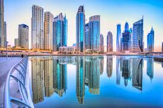
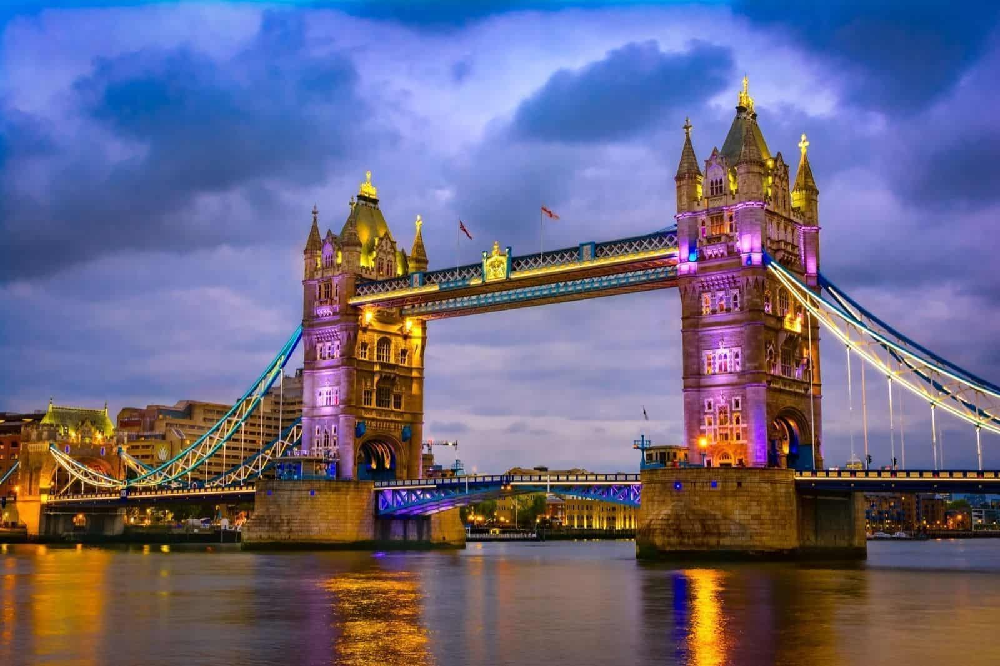

Dubái es uno de los siete emiratos que conforman los Emiratos Árabes Unidos, cuya capital es la ciudad homónima.

Londres es la capital y mayor ciudad de Inglaterra y del Reino Unido.45 Situada a orillas del río Támesis.

Sydney es la ciudad más grande y poblada de Australia y Oceanía, con una población en su área metropolitana cercana a los 4,92 millones.